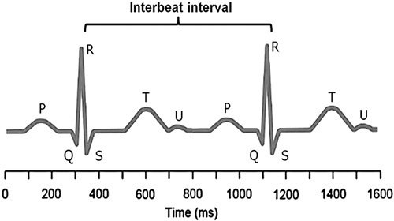

|  | It has long been known that resting heart rate is inversely related to average life span in most organisms that have been studied. Indeed, among mammals, where the relationship has been most intensively assessed, there is a linear, inverse semilogarithmic relationship between average resting heart rate and average life expectancy in all species except humans (who live longer than is predicted from their heart rate). This observation presumably relates to the interposition of medical care. The association between heart rate and life expectancy has been attributed to the metabolic rate, which is greater in smaller animals and is directly associated with heart rate. However, there are many other factors that affect heart rate, such as genetic influences on the cell biology of electrically active atrial tissues, autonomic nervous activity, inflammatory processes, etc. It is possible that the same factors that influence heart rate may also independently affect life expectancy. Nonetheless, heart rate itself affects the cardiovascular system in multiple ways that possibly influence survival. Consequently, heart rate may contribute to the development and acceleration of certain cardiovascular diseases, that, in turn, affect life expectancy [1,2,3,4,5,6]. In this brief review, the effects of heart rate on the heart, arterial system and survival will be considered. |
.jpg)